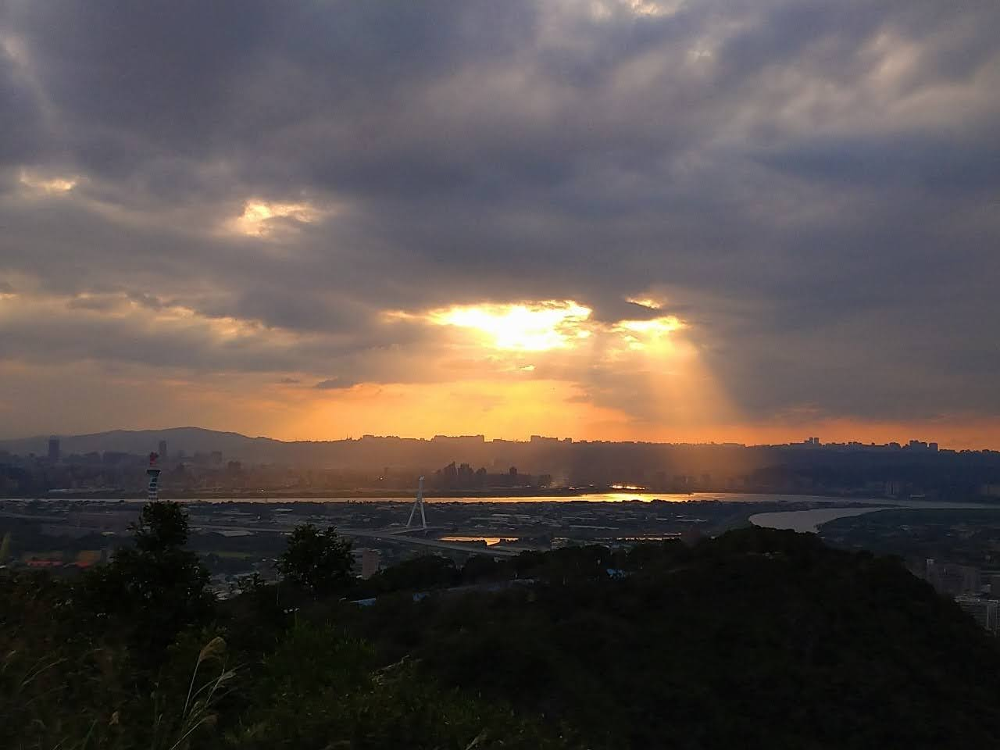
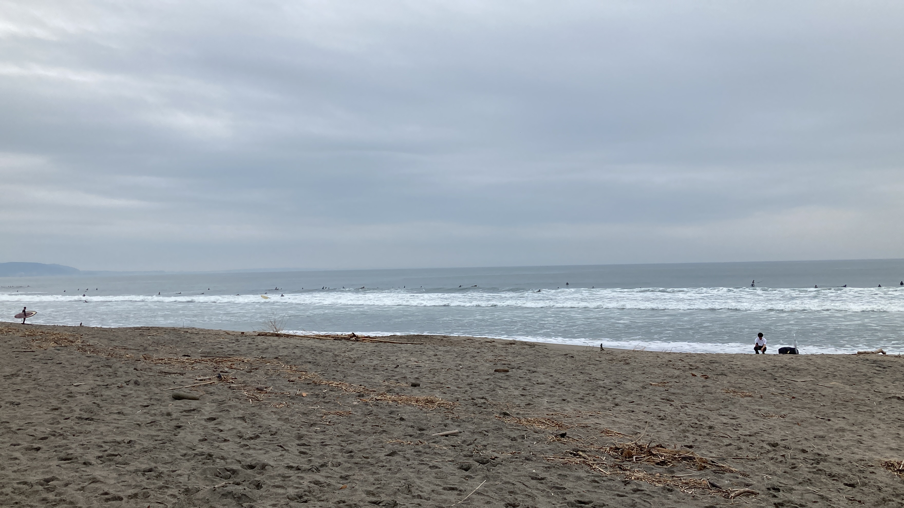
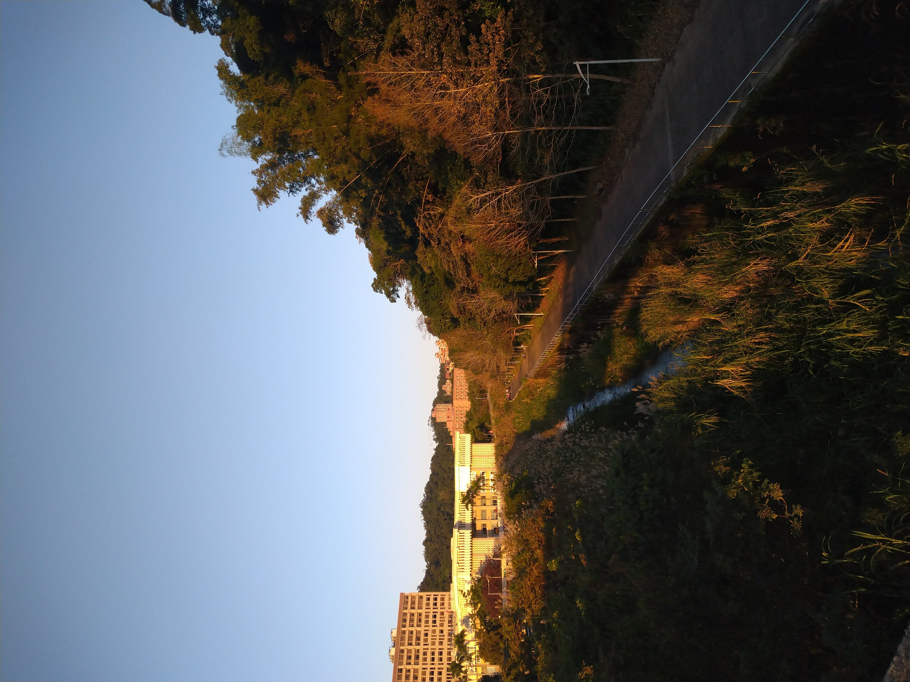

Scenery from Everywhere in the MultiUniverse!
Cloud sea in the mountains, sunset by the rivers, and sands on the beaches. This website will take you to those unlimited and beautiful places.

Embracing Taipei with rivers
A climb up to the battleship rock
Gazing far at the confluence
of the Keelung and Tamsui rivers

The horizon at Sagami Bay
By the shores of Shonan
The hazy skies blur the line where the
sea meets the heavens

Along the riverside at sunset
At the foot of Mount Zhinan
Silver grass and shimmering waves
of river dance in the golden light
There is no Finish Line.
Just do it !
The Meaning of Existence
Travel around the world by your own feet.
Let's get going !
Subscribe The Multiverse in Photography Yearbook